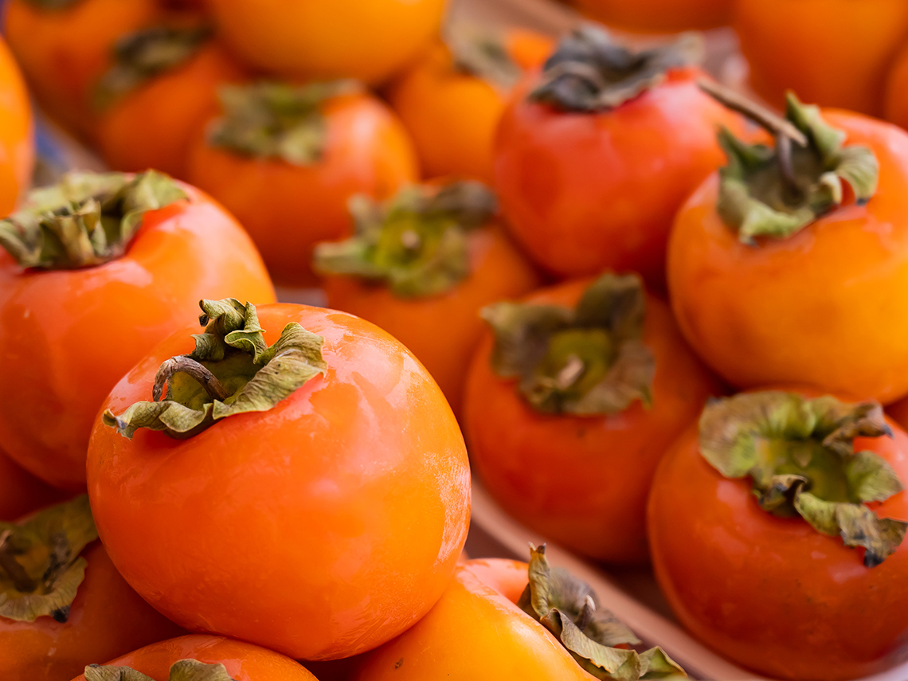
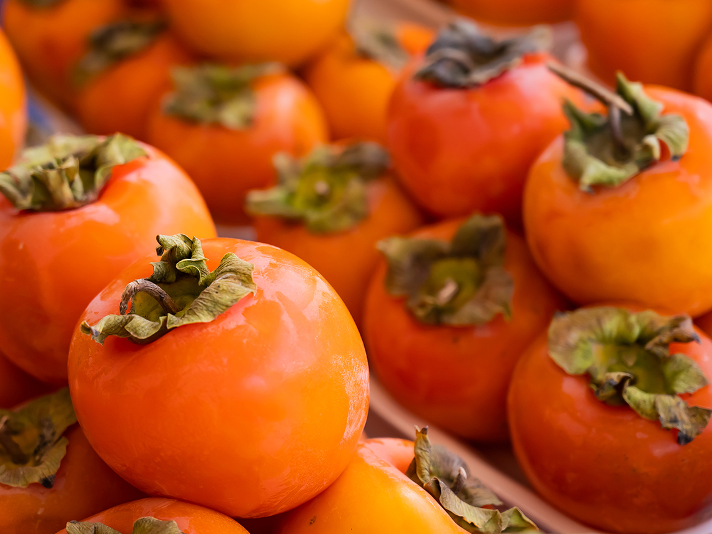

Persimmon
January 21 2022,
Jelena Cvetković Š.
|
Nutrition Facts |
|
| Portion Size | 170 g |
| Amount Per Portion | |
| Calories |
119 |
| % Daily Value* | |
| Total Fat 0,3g | 0 % |
| Sodium 1,7mg | 0 % |
| Total Carbohydrate 32g | 12 % |
| Dietary Fiber 6,1g | 22 % |
| Sugar 21g | |
| Protein 1g | 2 % |
| Vitamin D 0mcg | 0 % |
| Calcium 14mg | 1 % |
| Iron 0,3mg | 2 % |
| Potassium 274mg | 6 % |
| * The % Daily Value (DV) tells you how much a nutrient in a serving of food contribute to a daily diet. 2,000 calories a day is used for general nutrition advice.
**Source: www.nutritionvalue.org |
|
KAKI. Most cultivated persimmons are variants of the species Diospyros kaki (sometimes called Oriental persimmons, Chinese persimmons, Japanese persimmons, or kaki). It is native to China, Northeast India and northern Indochina.
Diospyros khaki (Oriental persimmon) originates from the mountains of central China. It was first cultivated in China more than 2000 years ago, and introduced to Japan in the 7th century and to Korea in the 14th century. Distribution of persimmons to countries outside Asia has occurred over the past 150 years.
So far, more than 2,000 varieties of persimmons have been developed, and currently around 400 are used for cultivation. In the last decade, persimmons have also become popular among Europeans because of their Mediterranean climate.
Kaki can be yellow, orange or red. It is usually harvested between late September and early December. The fruit is sweet and there are several varieties of persimmons that have quite different properties - they can be harder, softer, sweeter or bitterer. Kaki is usually eaten fresh.
In 2019, China produced 75% of the world's total persimmons.
By eating persimmons, you will not only enjoy in taste, but also do something good for your health. Among other things, it is an excellent source of vitamin C and beta-carotene, which are converted into vitamin A in our body. Kaki also contains many important minerals, among which manganese stands out in terms of quantity.
Kaki has a high content of sugar, more than in other fruits - apples, peaches, pears and oranges. It is a source of calcium and potassium, it also contains magnesium and phosphorus and zinc and iron. It contains dietary fiber and many antioxidants such as ascorbic acid, carotenoids, polyphenols and tannins.
Healing properties
- Due to its high content of beta-carotene and other carotenoid antioxidants, it stimulates the immune system.
- Fully ripe fruits regulate and speed up digestion and metabolism, and alleviate problems with constipation and hemorrhoids.
- Khaki is very useful for good kidney and liver function.
Use:
- Fresh kaki
It is most desirable, of course, to eat fresh fruit. Some varieties can be eaten as an apple, and softer ones with a spoon.
- Drying
Kaki can also be dried and later used as a delicious sweet snack, which can be a great alternative to industrially prepared sweets.
- Marmalade
We can also make various jams from them.
- Freezing
Persimmons can be frozen by grinding them into a homogeneous mass, adding lemon juice to keep them from turning brown, then packing them into smaller containers and storing them in the freezer. Thus, they are usable for up to 6 months.
* Due to the content of dietary fiber, kaki is not the most suitable for making juices, but it can be mixed into some smoothies.

Persimmon green smoothie with quinoa
 Preparation: 5 min
Preparation: 5 min
 Cooking: 2 min
Cooking: 2 min
 Difficulty: easy
Difficulty: easy
 Servings: 2
Servings: 2
vegan, gluten free, dairy free
If we buy unripe fruits, they will easily ripen at room temperature, and the process is accelerated if we put it in a closed container with apples or bananas. Ripe fruits can be stored in the refrigerator for a short time.
Photo credits:
iStockphoto